May 2026

TechnologyGoogle I/O
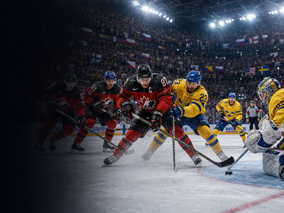
SportIIHF World Championship
SportFrench Open / Roland Garros

Motor sportIndianapolis 500
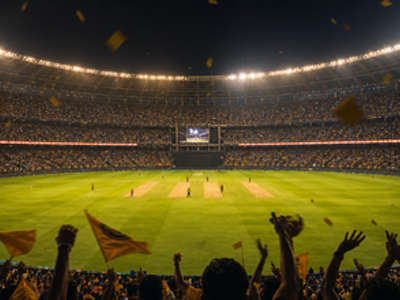
SportIndian Premier League Final

🏎️ Motor sportCanadian Grand Prix

🎭 CultureCannes Film Festival

🏆 SportChampions League Final

🎭 CultureFes Festival of World Sacred Music
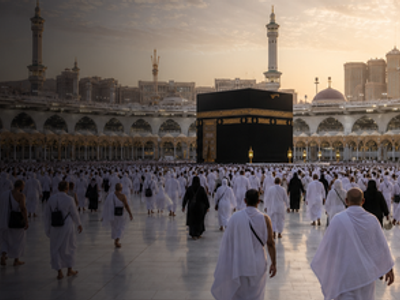
🎭 CultureHajj
🏆 SportState of Origin

🎪 FestivalVivid Sydney
June 2026

TechnologyMicrosoft Build

TechnologyApple WWDC
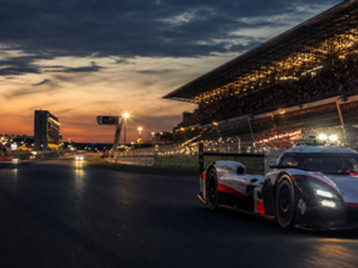
Motor sportLe Mans 24 Hours
SportStanley Cup Final
SportNBA Finals
🏆 SportU.S. Open Golf
🎭 CultureBali Arts Festival
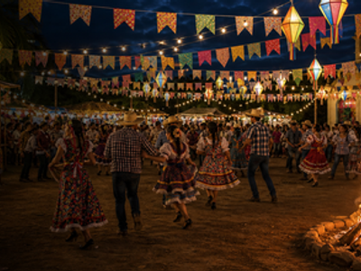
🎪 FestivalFesta Junina
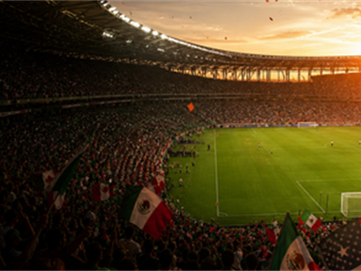
🏆 SportFIFA World Cup
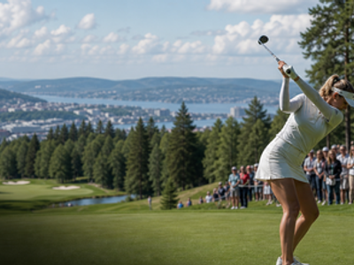
🏆 SportKLPGA Oslo Ladies Open
🎭 CultureInti Raymi

🏎️ Motor sportMonaco Grand Prix
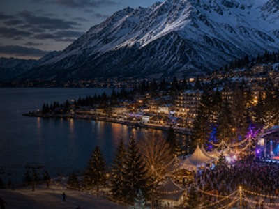
🎪 FestivalQueenstown Winter Festival
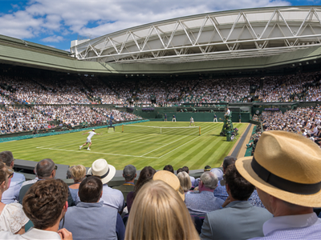
🏆 SportWimbledon
July 2026


August 2026
September 2026
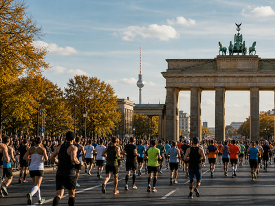
SportBerlin Marathon 2026

🏆 SportAFL Grand Final
🏆 SportAsian Games 2026
🎭 CultureBrazil Independence Day
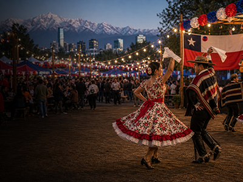
🎭 CultureChile Fiestas Patrias
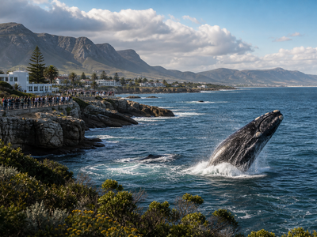
🌿 NatureHermanus Whale Festival
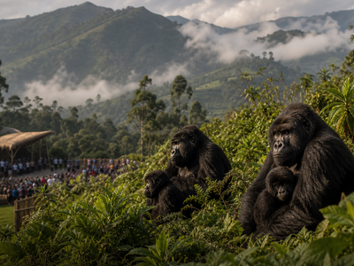
🌿 NatureKwita Izina
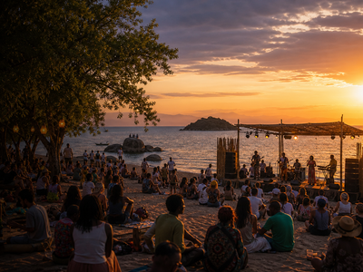
🎪 FestivalLake of Stars Festival
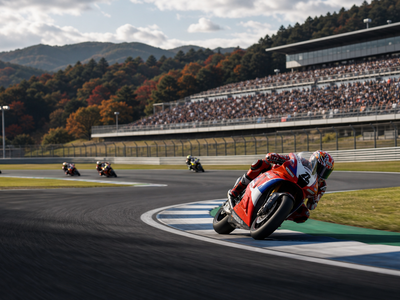
🏎️ Motor sportMotoGP Japan
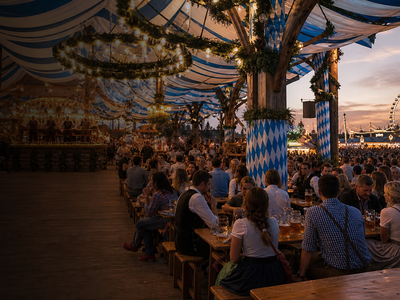
🎪 FestivalOktoberfest
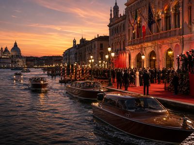
🎭 CultureVenice Film Festival
October 2026

SportWorld Series 2026
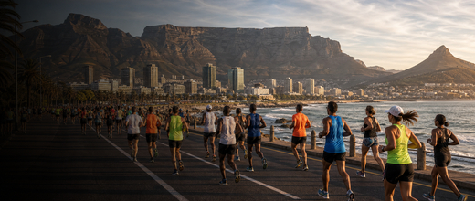
🏆 SportCape Town Marathon
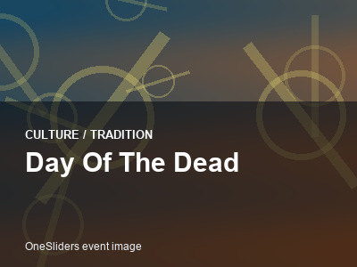
🎭 CultureDay of the Dead
🎭 CultureDiwali 2026
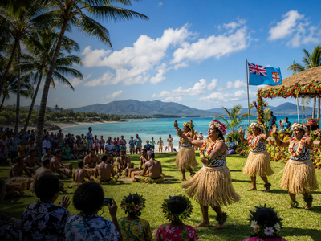
🎭 CultureFiji Day
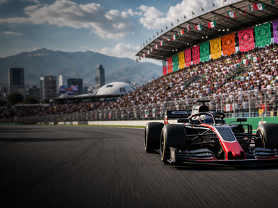
🏎️ Motor sportMexico City Grand Prix
🏆 SportNRL Grand Final
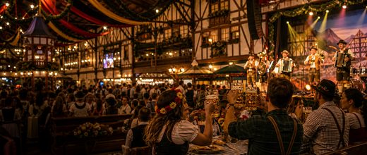
🎪 FestivalOktoberfest Blumenau
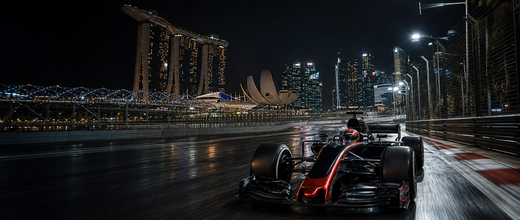
🏎️ Motor sportSingapore Grand Prix
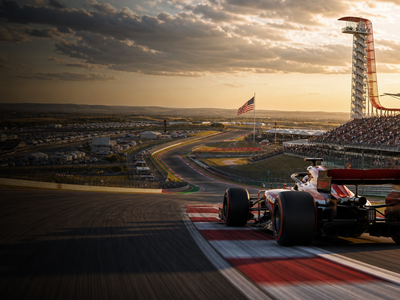
🏎️ Motor sportUnited States Grand Prix
November 2026
🎭 CultureCairo International Film Festival
🏆 SportCopa Libertadores Final
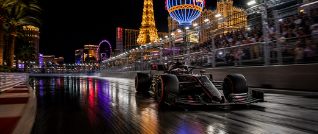
🏎️ Motor sportLas Vegas Grand Prix
🎭 CultureMarrakech Film Festival
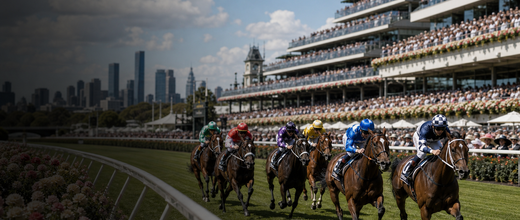
🏆 SportMelbourne Cup
🏆 SportNew York City Marathon
🏎️ Motor sportQatar Grand Prix
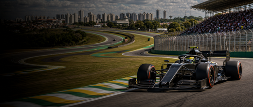
🏎️ Motor sportSão Paulo Grand Prix
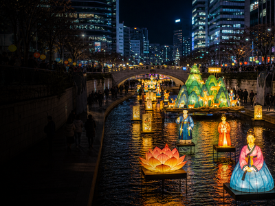
🎭 CultureSeoul Lantern Festival
🎭 CultureYi Peng & Loy Krathong
December 2026
July 2028

February 2030
June 2028

June 2027


January 2027


February 2026
October 2027

February 2027

September 2027
April 2027


March 2027


May 2027

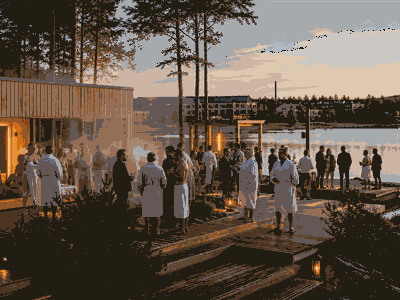
WellnessWorld Sauna Forum
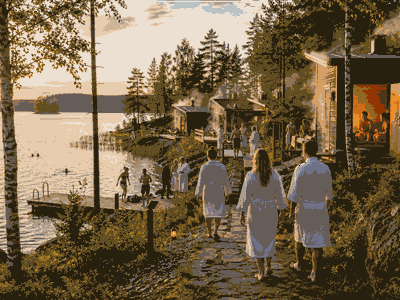
WellnessSauna Region Week
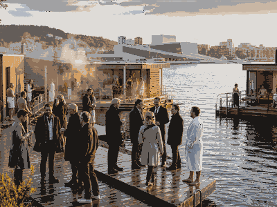
WellnessInternational Sauna Congress
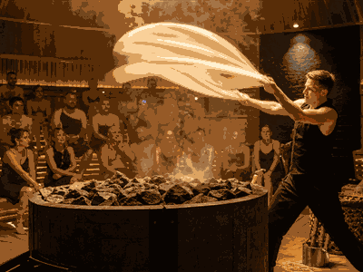
WellnessAufguss WM
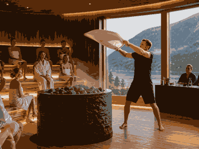
WellnessModern Classic Cup
WellnessUK Aufguss Championships
WellnessEuropean Sauna Marathon
Wellnessinterbad Sauna Forum
WellnessWorld Sauna Day
WellnessHelsinki Sauna Day
WellnessTampere Sauna Week
WellnessTuira Sauna Festival
WellnessSauna Herbal Cup

WellnessNordic Sauna Summit
WellnessBritish Sauna Week
WellnessJapan Sauna Fair

WellnessSauna & Wellness Expo Japan
WellnessAustralia Sauna & Cold Plunge Festival
WellnessNorth American Sauna Summit
WellnessCanadian Sauna Culture Weekend